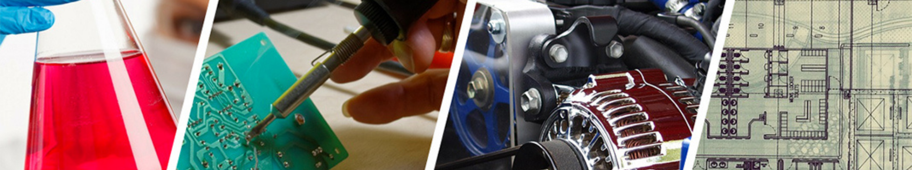

Choice Project¶
Choice Project Overview¶
Research and Project Planning¶
This part is critical. There are three assignments to submit. The research is about avoiding the most common and time-wasting mistakes by learning from those who have gone before you. The project plan requires that you think your way through the project before actually starting—Is it possible? Do I have enough time? Will it cost money or other resources? Is it dangerous? Et cetera.
Assignment/ To-Hand-In |
End-Of-Day Goal |
Due Date |
|---|---|---|
Choice Project Topic |
Submit your project plan |
Wed, June 9, 2021 |
Explore ideas and commit to a project. |
Tue, June 8, 2021 |
Creating Your Artifact¶
This is where your research efforts and project plan will pay off. Big hint: things always take longer than you might expect, so plan to get done early so that you have time for when things go wrong (they nearly always do).
Assignment/ To-Hand-In |
End-Of-Day Goal |
Due Date |
|---|---|---|
Finish your first iteration/stage of the build and see if it works. |
Tue, June 15, 2021 |
|
Finish your build and see if it works. |
Tue, June 22, 2021 |
|
Final Artifact |
Submit a link to your finished artifact |
Thurs, June 24, 2021 |
Showcase and Reflection¶
What have you accomplished? What do you have to share? How did it go?
Assignment/ To-Hand-In |
End-Of-Day Goal |
Due Date |
|---|---|---|
Finish your showcase outline |
Thurs, June 17, 2021 |
|
Showcase |
Final edits to your showcase |
Wed, June 23, 2021 |
What worked? What didn’t? |
Thurs, June 24, 2021 |
Special note here: As marks are due June 24th, be sure to have your video submitted on June 23rd. It will not be possible to extend deadlines.
Edited
<https://teams.microsoft.com/l/message/19:9b462cf6e34243cebaa36208aac71938@thread.tacv2/1623082647717?tenantId=0b8a2e58-7b30-4a08-bab7-d75559e0e3a5&groupId=70cd545c-5227-41de-af89-f32585f43143&parentMessageId=1623082647717&teamName=STEM 9 Templeton 2021&channelName=P3-Choice&createdTime=1623082647717>
created: 20210722-1407
#STEMProject #STEM-Planning